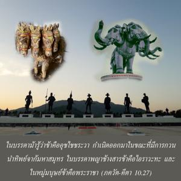
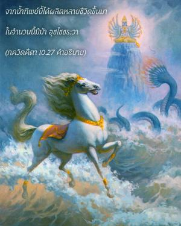
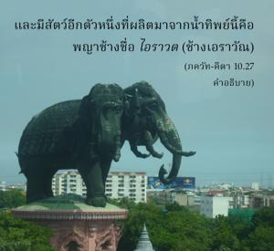
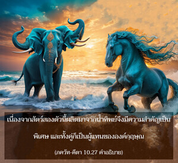
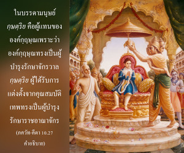

ในบรรดาม้ารู้ว่าข้าคือ อุจฺไจห์ศฺรวา กำเนิดออกมาในขณะที่มีการกวนเกษียรสมุทร ในบรรดาพญาช้างสารข้าคือ ไอราวต (ช้างเอราวัณ) และในหมู่มนุษย์ข้าคือ พระราชา





เหล่าเทวดา (สาวก) และเหล่ามาร (อสุร) ครั้งหนึ่งได้มีการกวนเกษียรสมุทร ผลจากการกวนในครั้งนั้นได้ผลิตทั้งน้ำทิพย์และยาพิษ พระศิวะทรงดื่มยาพิษ จากน้ำทิพย์นั้นได้ผลิตหลายชีวิตขึ้นมา ในจำนวนนั้นมีม้า อุจฺไจห์ศฺรวา และมีสัตว์อีกตัวหนึ่งที่ผลิตมาจากน้ำทิพย์นี้คือ พญาช้างชื่อ ไอราวต (ช้างเอราวัณ) เนื่องจากสัตว์สองตัวนี้ผลิตมาจากน้ำทิพย์จึงมีความสำคัญเป็นพิเศษ และทั้งคู่ก็เป็นผู้แทนขององค์กฺฤษฺณ
ในบรรดามนุษย์ กฺษตฺริย คือผู้แทนขององค์กฺฤษฺณเพราะว่าองค์กฺฤษฺณทรงเป็นผู้บำรุงรักษาจักรวาล กฺษตฺริย ผู้ได้รับการแต่งตั้งจากคุณสมบัติเทพทรงเป็นผู้บำรุงรักษาราชอาณาจักร กฺษตฺริย เช่น มหาราช ยุธิษฺฐิร มหาราช ปรีกฺษิตฺ และพระราม ทุกพระองค์ทรงเป็น กฺษตฺริย ผู้มีคุณธรรมสูงส่ง ทรงคิดถึงแต่ความอยู่เย็นเป็นสุขของประชากรเสมอ ในวรรณกรรมพระเวทพิจารณาว่าพระเจ้าแผ่นดินทรงเป็นผู้แทนขององค์ภควานฺ อย่างไรก็ดีในยุคนี้จากการทุจริตในหลักธรรมแห่งศาสนาราชาธิปไตยจึงเสื่อมลงและในที่สุดก็ยกเลิกไป ถึงกระนั้นควรเข้าใจไว้ว่าในอดีตนั้นการอยู่ภายใต้การปกครองของบรรดา กฺษตฺริย ผู้ทรงธรรมประชาชนจะมีความสงบสุขมากกว่า